TrustyAI SHAP: Overview and Examples
SHAP is soon to be the newest addition to the TrustyAI explanation suite. To properly introduce it, let’s briefly explore what SHAP is, why it’s useful, and go over some tips about how to get the best performance out it.
A Brief Overview
Shapley Values
The core idea of a SHAP explanation is that of a Shapley value, a concept from game theory that won its eponymous inventor Lloyd Shapley the 2012 Nobel Prize in Economics. Shapley values are designed to solve the following problem:
Given some coalition C of members that cooperatively produce some value V, how do we fairly determine the contribution p of each member in C?
Here, a coalition simply refers to a group of cooperating members that work together to produce some value V, called the coalition value. This could be something like corporation of employees that together generate a certain profit, or a dinner group running up a restaurant bill. We want to know exactly how much each member contributed to that final coalition value, what share of the profit each employee deserves, how much each person in the dinner party owes to settle the bill. In simple cases, this can be easy enough to manually figure out, but it can get tricky when there are interacting effects between members, when certain permutations cause members to contribute more or less than the sum of their parts.
A Simple Example
As an example, let’s look at a coalition that contains 4 members: Red, Orange, Yellow, and Green.
Let’s imagine that these are tokens in a game, where your score is calculated as follows:
- Having the red token adds 5 points to your score. Yellow adds 4 points, while orange and green both add 3.
- Having any two colors grants a 5 point bonus.
- Having any three colors grants a 7 point bonus.
- Having all four colors grants a 10 point bonus.
Under these rules, having all four tokens would result in a score of 25: first, we add the raw token values 5+4+3+3=15, then add 10 points from the 4-token bonus. Now the question is, how many of those 25 points were contributed by the red token? This is exactly what Shapley values seek to answer, and do this via a property called average marginal contribution.
To compute this, we first look at every possible subcoalition of the members of our coalition, that is, listing all of the different ways of selecting anywhere between 0 and 4 tokens:
Then, we organize these coalitions into pairs, such that each member in the pair differ only by the inclusion of the particular member we’re investigating. In this case, we’ll pair coalitions that differ only by the inclusion of the red token:
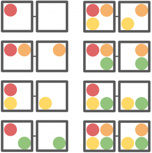
We then find the coalition value of each of these subcombinations, that is, determine the score that each particular coalition of tokens would produce. Then, we find the difference between the two paired coalitions: the difference in score caused by adding the red token:
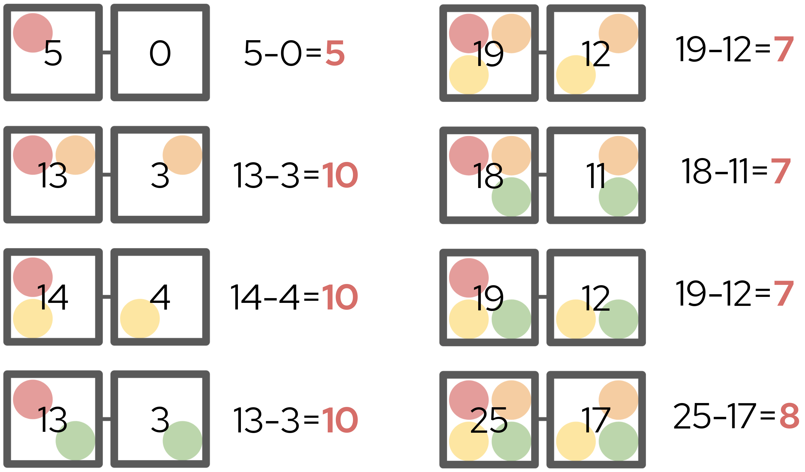
The difference in scores within each pair is called the marginal contribution. Each marginal contribution is then weighted according to how common that particular comparison is. In this example, there are three pairs that compare a 2-token coalition to a 1-token coalition, meaning their weights are each 1/3. Meanwhile, there is only one pair that compares a 1-token coalition to a 0-token coaltion, and thus its weight is 1/1. We then find the weighted sum of each marginal contribution multiplied by its corresponding weight:
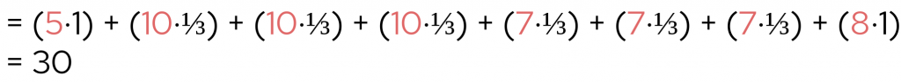
Dividing this number by the total number of members in our original coalition (4) gives us the red token’s Shapley value. This is a measure of how much the addition of a red token adds on average to any arbitrary grouping of tokens. In our case, the red token’s Shapley value is 30 ÷ 4 = 7.5, which means that in our original four token hand, the red token contributed 7.5 of our 25 points. We can repeat this process for the other tokens, and now we’ve computed the Shapley values for all four tokens:
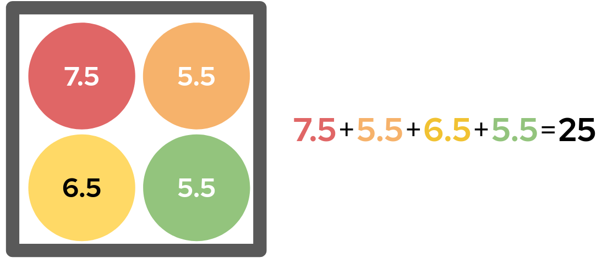
Therefore, of the 25 points our hand was worth, the red token contributed 7.5 points, the yellow 6.5, and the orange and green 5.5. This seems like very fair way of assigning credit for the total score: each Shapley value is equal to the token’s base score, plus 1/4 of the 10-point four-color bonus.
Shapley Values and Explainability
With Shapley values, we now have a means of fairly describing the influence any certain member had on the value of the coalition. We can adapt this concept relatively easily to produce model explanations by instead looking to describe the influence any certain input feature had on the model output. Here, an input feature simply refers to a discrete component of a model’s input; for example, if the model processes loan applications, the input features might be things like the applicant’s name or age.
While this seems straightforward enough, computing the Shapley values of an n-feature model in practice requires passing 2n different feature permutations through a model. In situations where we have lots of features or expensive model evaluation, evaluating all 2n combinations may not be feasible. For example, if we had a 25 feature model that takes just one second to evaluate, evaluating all 225 permutations would take over a year! Furthermore, there is an additional practical obstacle: you cannot simply omit a feature from the input of most decision models without having to either retrain or redesign the entire model.
SHAP
To rectify these problems, Scott Lundberg and Su-In Lee devised the Shapley Kernel in a 2017 paper titled “A Unified Approach to Interpreting Model Predictions”.
Combination Enumeration
To solve the problem of needing to enumerate every possible feature permutation, the Shapley Kernel instead evaluates just a small sample of combinations. Each of the combinations is then assigned some binary vector, where a 1 in the ith position of the vector indicates that the ith feature is included, while 0 indicates exclusion. This gives us a sample of vectors and coalition values, from which we can write a simple system of linear equations.
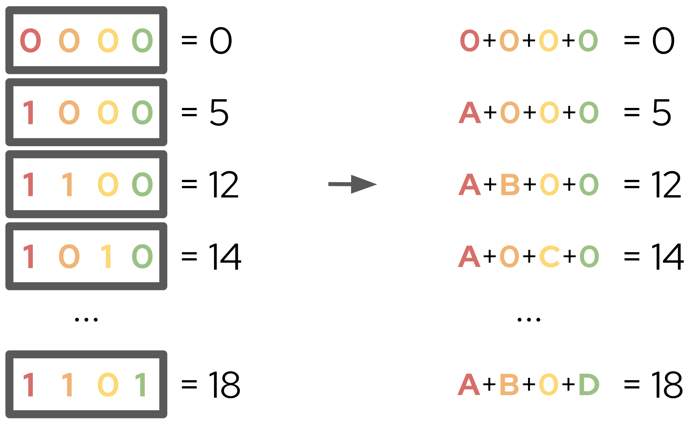
From this system, we can fit a weighted linear regression model to find A, B, C, and D. With a very specific choice of weightings calculated from various combinametric statistics, we can actually ensure that the weighted linear regression recovers the Shapley values of their respective features! This is the key insight of the Shapley Kernel, that a simple regression over a sample of feature permutations can provide an excellent estimation of Shapley values. With these Shapley values, we can approximate any model with an explanatory model of the form:
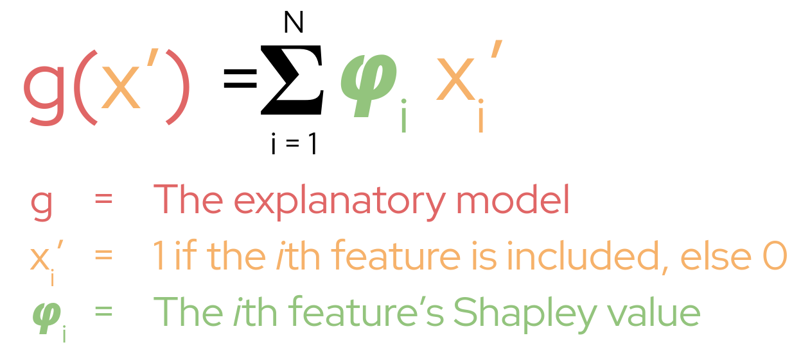
This gives a very easy to understand, additive explanation of each feature’s contribution to the model output; we can simply look at each Shapley value to know the effect each feature had.
Background Data
Next to solve is the feature omission problem. Lundberg and Lee do this by simpling reframing what it means to omit a feature. Rather then omit a feature entirely from the model input, they instead replace it with a variety of its typical values, called the background (noise) of the feature. This background feature values are taken from a background dataset, a set of around 100 or so typical inputs to the model. Instead of computing the marginal contribution as the difference between the model output with the feature included versus excluded, we instead find the difference between the model output with the desired feature value versus a background value of that feature. We do this for every background feature value from the background dataset, and take the average of all of those comparisons as our marginal contribution:
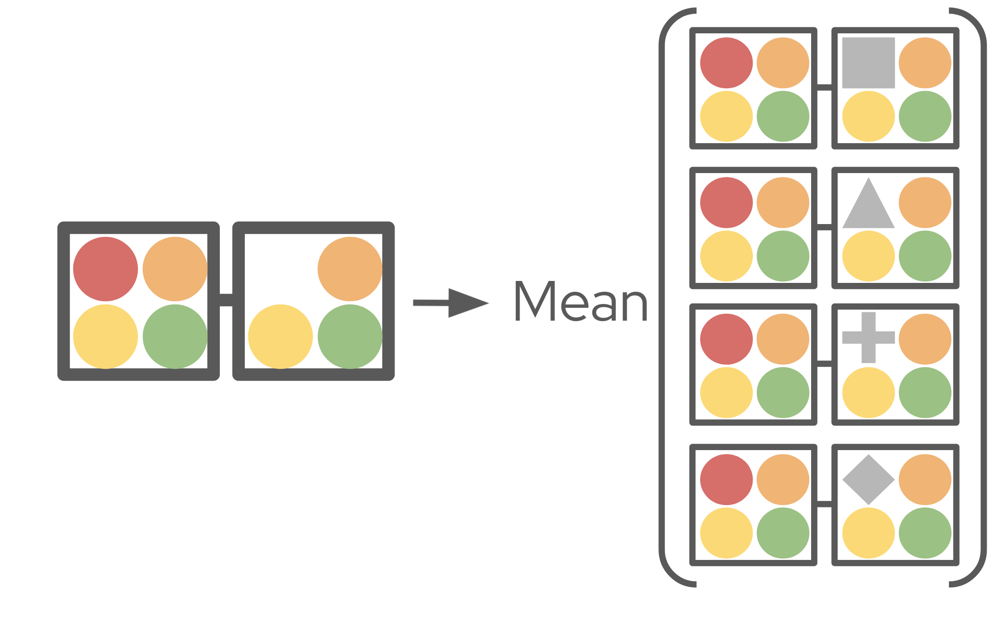
Under this reformulation, the Shapley value is measuring how much this particular value of a feature contributed to the model’s output, as compared to background values of the feature. This introduces a very important concept to SHAP, and that is the background value of the model: the average model output over all the background datapoints. Mathematically, this serves to add an intercept to our explanatory model:
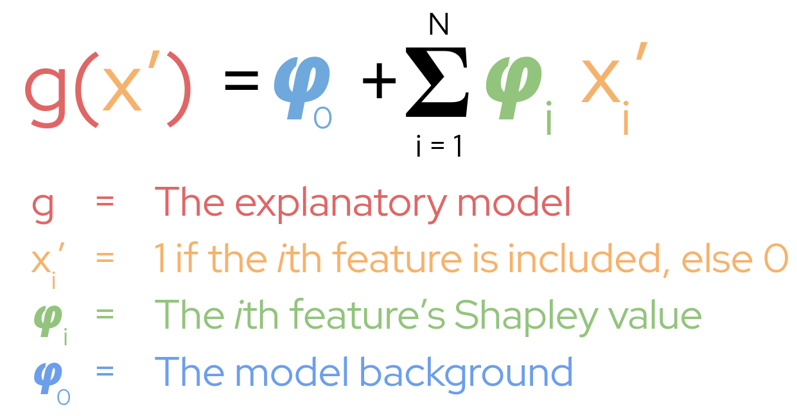
Therefore, our model output is equal to the sum of all Shapley values, plus the model background value.
A “Real World” Example
Let’s take a look at using SHAP to explain a real world prediction. If you’d like to follow along, the code for this example is found here, and the code for generating the plots is here.
Let’s imagine we’re a bank, and we automatically determine loan eligibility via a random forest classifier. Our model receives seven features as input, the applicant age, their annual income, their number of children, their number of consecutive days of employment, and whether or not they own property, a work phone, or car. From this information, our model outputs a number between 0% and 100%; the applicant’s probability of being accepted for a loan. Let’s say we’ve just received an applicant with the following details:
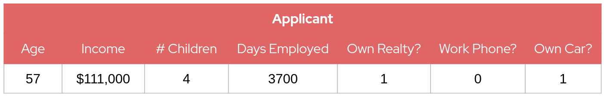
From this input, our model outputs that our applicant has a 65.9% chance of approval. However, if we want to understand why that particular decision was made, we need to be able to provide an explanation of how the applican’ts features affected the output and thus we turn to SHAP. To run SHAP, we need a set of background datapoints from which we can generate our background feature values. In this example, I just randomly generate 100 background datapoints, but when using SHAP for real you might select data points from the model training data or in such a way that the background has desirable properties. In our case, the model output over our 100 randomly-generated background datapoints gave an average approval probability of 46.60%, which thus sets our background value. To better interpret this background, let’s take a look at the average feature value from our background data as compared to our applicant:
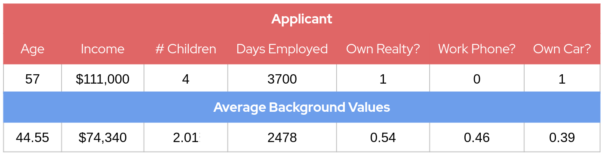
Here we see that our applicant has a higher-than-background age, income, number of children, and days employed. Like a majority of background dataset applicants, they own realty and do not own a workphone, but are in the minority that own a car. With an idea of how our applicant differs from the typical background applicant, we can now run SHAP to see how these differences affected the model output.
First, we configure SHAP to use these background datapoints, then pass it our random forest classifier and our applicant’s feature data. After SHAP finishes running, we are returned a list of Shapley values, which we then visualize in a candlestick chart:
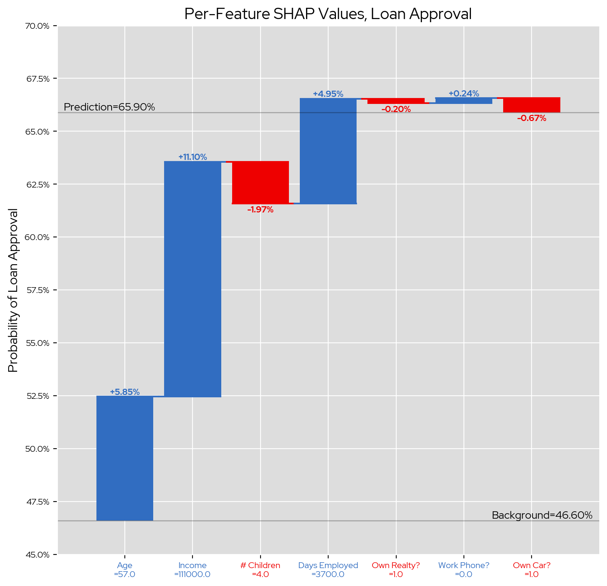
In this chart blue bars indicate that our applicant’s feature difference versus the background has a positive effect on their approval rate, while red bars indicate the difference negatively affected their approval. Therefore, the most positive impact was our applicant’s higher-than-background income, which increased their probability of acceptance by 11.10 percentage points. Meanwhile, their higher-than-typical number of chilren was the most negative impact, reducing their acceptance probability by 1.97 percentage points. Both of these make a lot of intuitive sense; a larger income would naturally increase your ability to pay back a loan, whereas having more children and thus more financial dependents might decrease that ability.
These results indicate that both our random forest model’s decision-making process and our explanatory model’s explanations align with our domain intuition, which is an excellent indicator of the quality of both. This is one of the great advantages of explainability; not only does it provide transparency into model decisions, it also allows for sanity-checking of model behavior.
Tips and Tricks
Interpreting SHAP Explanations
As we’ve seen, a SHAP value describes the effect a particular feature had on the model output, as compared to the background features. This comparison can introduce some confusion as to the meaning of the raw Shapley values, and make finding clear intuition a little trickier. This is especially true when the reference points are not clearly defined. For example:
- “Your income increased your acceptance probability by 11.10 percentage points.”
- “You own a car, which reduced your acceptance probability 0.67 percentage points.”
This explains the income’s effect on the outcome, but does not answer what about the applicant’s income affected the result. Was it too high? Was it too low? There is an explanation, but it is too vague to be actionable in any meaningful way. Instead, we can try directly comparing the applicant’s feature value to the average background value of that feature. This makes the Shapley value’s implicit comparison to the background explicitly clear:
- “Your income is $36k higher than a typical income, which increased your acceptance probability by 11.10 percentage points.”
- “You own a car, which we see in only 39% of typical loan applicants. Because of this, your acceptance probability was reduced by 0.67 percentage points.”
Not only does this convey the comparison being made by the Shapley value, but it also provides the applicant some actionable information about their outcome, e.g., “Having a high income and number of consecutive days of employment really helped my loan application, I should take this into account when I’m thinking about retiring.” In a way, this makes a SHAP explanation analagous to a counterfactual explanation: it informs you of any potential changes you might be able to make to influence your outcome.
Model Background Choice
Since the explanations produced by SHAP are comparisons against the background dataset, the choice of background data is highly influential on the returned Shapley values. For example, here are three sets of SHAP explanations for the same model and input (the specific details of which aren’t important), just with three different choices of background:
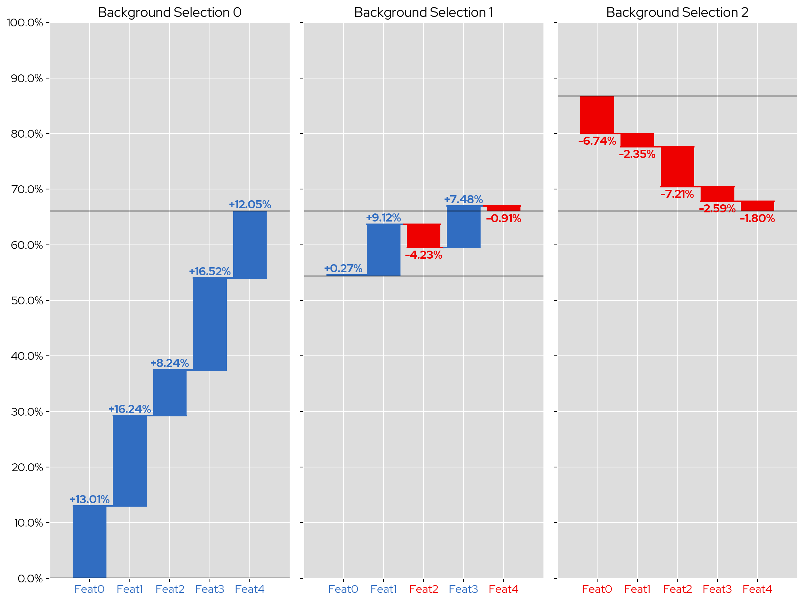
Despite the input data point and model not changing, the directions of the Shapley values vary wildly; for example, the first Shapley value is +13 for the first background selection, +0.27 for the second, and -6.74 with the third. All of these these Shapley values arrive at the same end prediction, and thus are all accurate explanations of the model’s behavior, but convey different information due to their differing comparisons. The choice as to which set of values is better is subjective and domain specific, and as such the choice of background datapoints needs to done with careful intent. In general, you should try playing around with various choices to see what produces the clearest and most helpful explanations.
Conclusions
In this post, we’ve explored the theoretical foundation of SHAP, examined how the SHAP Kernel Explainer produces explanations, and how we can interpret these explanations as much insight as we can. To see a video overview of SHAP with some different examples, check out my video on the KIE Youtube channel. SHAP will be joining LIME and Counterfactuals in TrustyAI’s XAI suite shortly, so stay tuned for more updates!